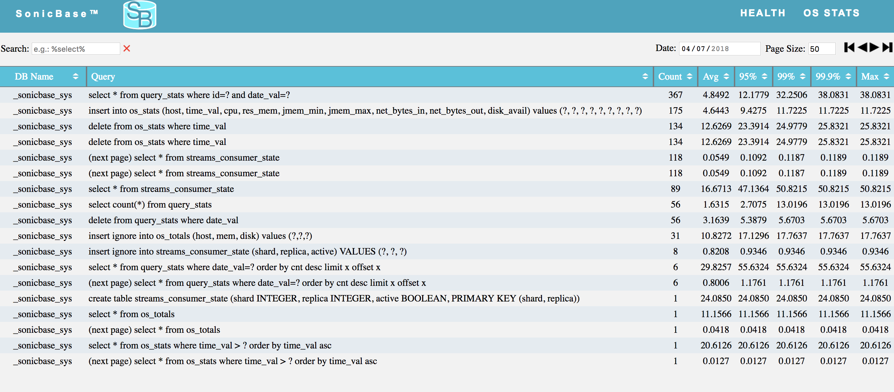

- Average
- 75th Percentile
- 95th Perceentile
- 99th Percentile
- 99.9th Percentile
- Max
You can specify the date you want to monitor queries for. Queries for the last thirty days are retained in the database. Up to 10k queries are stored each day. The most recently issued queries are retained.
You can specify the page size you want for the view. The default page size is fifty entries.
In the upper right hand part of the page are controls for navigating the results. You can select "first page", "previous page", "next page", and "last page".
You can search the queries by entering search criteria in the search box. The syntax is the same as what is supported by the SQL "like" operator.
